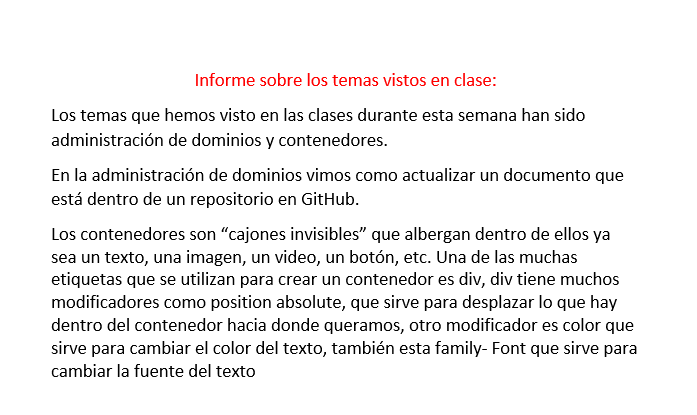
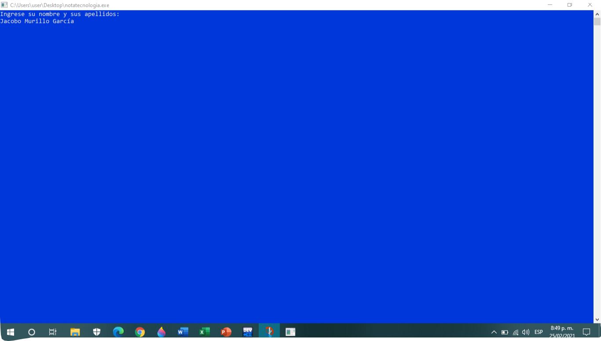
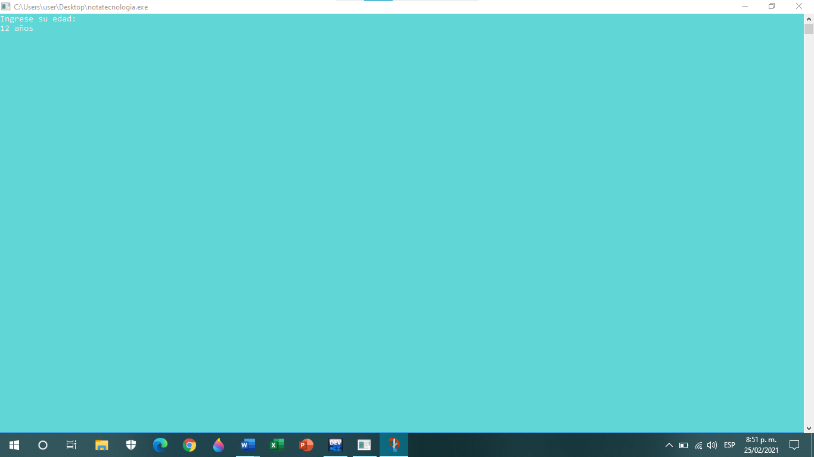
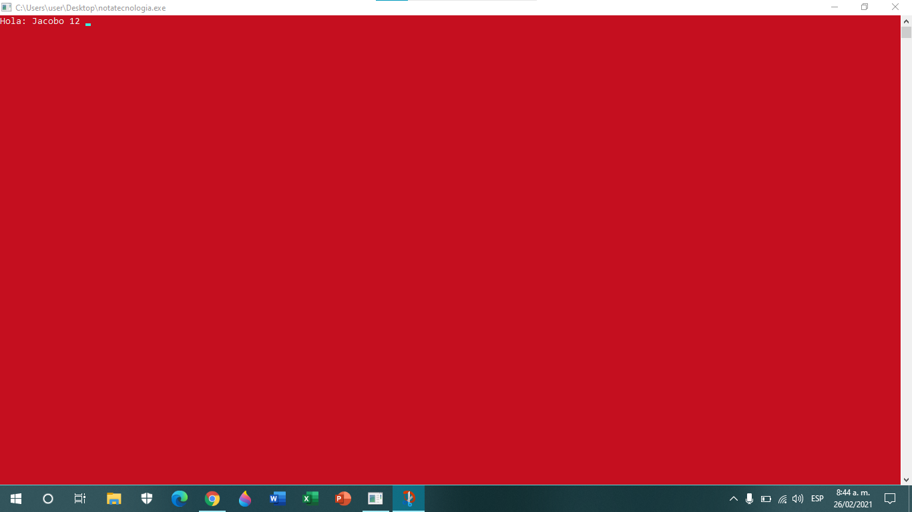
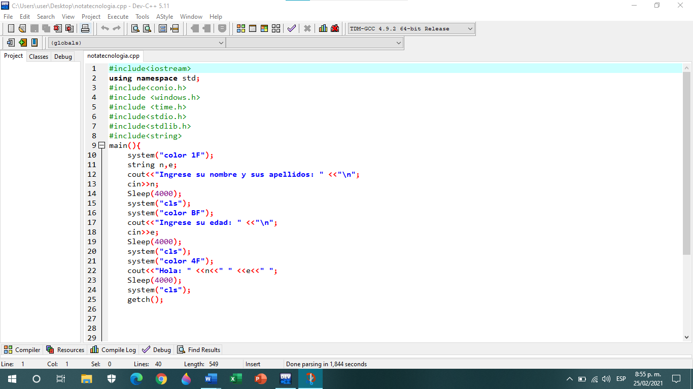
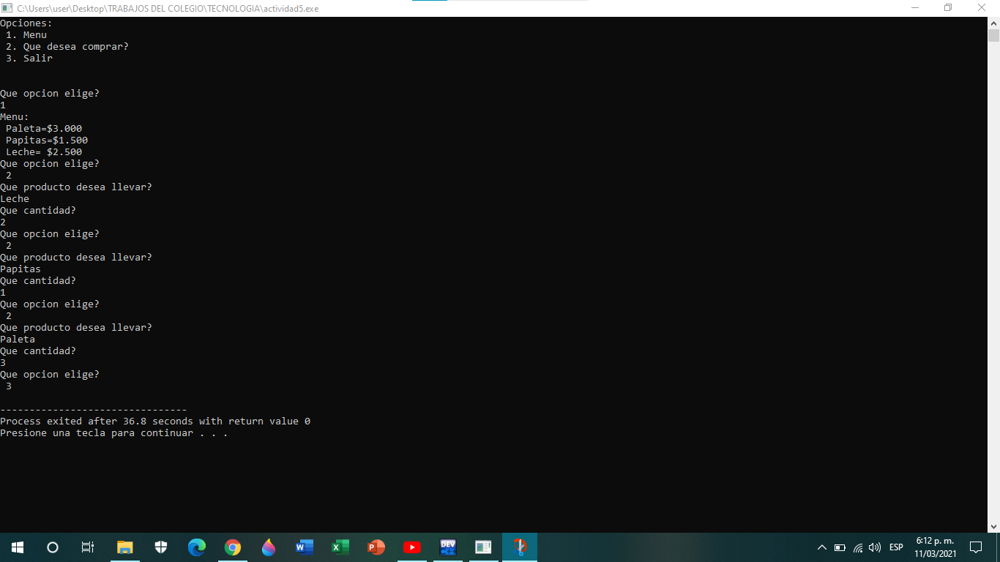

Periodo 1
Actividad 2 (Informe)

ACTIVIDAD 3




Actividad 4
Profe al final del algoritmo yo si puse la } para cerrar el main, solo que en la imagen no se ve porque al tomar el recorte no me alcanzo para que quedara
ACTIVIDAD 5
